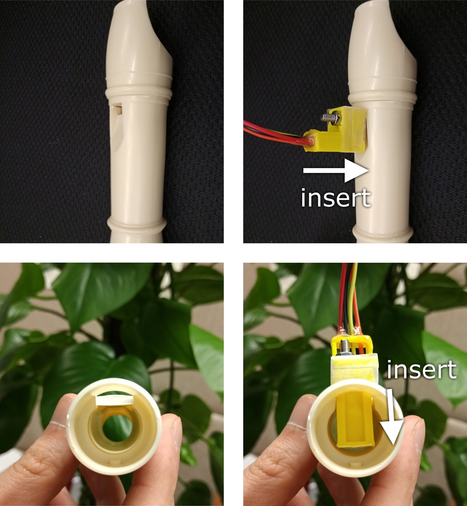
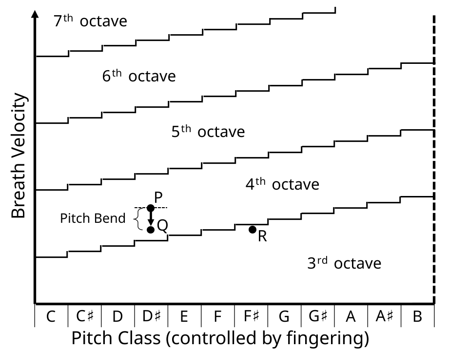
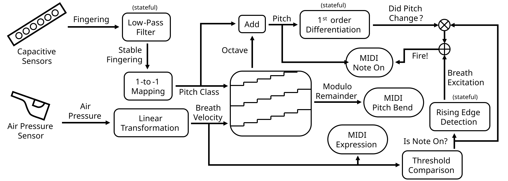
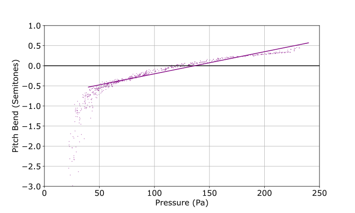

Hyper-hybrid Flute: Simulating and Augmenting How Breath Affects Octave and Microtone
Abstract
We present hyper-hybrid flute, a new interface which can be toggled between its electronic mode and its acoustic mode. In its acoustic mode, the interface is identical to the regular six-hole recorder. In its electronic mode, the interface detects the player's fingering and breath velocity and translates them to MIDI messages. Specifically, it maps higher breath velocity to higher octaves, with the modulo remainder controlling the microtonal pitch bend. This novel mapping reproduces a highly realistic flute-playing experience. Furthermore, changing the parameters easily augments the interface into a hyperinstrument that allows the player to control microtones more expressively via breathing techniques.
Author Keywords
Electronic wind instrument, breath control, hyperinstrument, flute, pitch bend, microtone, octave
CCS Concepts
Applied computing → Sound and music computing;
Introduction
Many pioneering prototypes [1][2][3][4] and commercial products [5][6] have explored the digital implementation of a wind instrument. A digital wind instrument exposes the musician’s performance to the computer, thus allowing not only real-time sound synthesis and real-time performance transcription but also real-time performance augmentation.
A subtle but important feature of wind instruments is that musicians, via breathing techniques, have control over not only loudness but also articulation, octave, microtone, etc. However, most existing digital wind instruments do not capture the various effects of breath. Instead, they rely on extra interface elements. For example, to control the octave, Steiner [1] uses a rotational disc controlled by the left hand, Shibata [5] measures the direction and intensity of lip pressure, and Vashlishan [6] employs a thumb roller.
In this work, we aim to incorporate the profound role of breath control into a digital flute. We develop the hyper-hybrid flute, an interface that translates real-time breath data into MIDI controls. Specifically, this interface has three contributions:
It simulates a nuanced acoustic property of the flute, in which higher breath velocity leads to higher octaves and more microtonal pitch bend.
By exaggerating the parameters, we augment the interface into a hyperinstrument.
We design a simple mechanism to easily toggle the interface between its electronic mode and its acoustic mode.
Design
Electronic-acoustic Hybrid Interface
The hardware of the interface is a sensor-augmented six-hole recorder, capable of making sounds acoustically on its own. We place a ring-shaped capacitive sensor on each one of the six recorder holes to detect whether the hole is covered by a finger. We also employ a BMP085 air pressure sensor [7] to measure the breath velocity.


The sensors are non-invasive. To enter the electronic mode, the player inserts the air pressure sensor into the exiting airway of the mouthpiece (Figure 1, right column). This will mute the recorder and simultaneously expose the sensor to the air pressure inside the recorder, from which the breath velocity will be computed. To enter the acoustic mode, the player releases the air pressure sensor from the exiting airway (Figure 1, left column), so that playing the interface will produce sound acoustically and the air pressure sensor will not be triggered.
Controlling Octave and Microtone via Breath


We model how breath affects the microtone and the octave as follows:
For any pitch, blowing harder into the six-hole recorder leads to an upward microtonal pitch bend.
When the breath velocity passes a threshold, the pitch jumps one octave higher.
Such breath velocity thresholds increase as the pitch rises.
Figure 2 shows the designed thresholds (the stepped lines) for different pitch classes. The midpoint between two thresholds (the dotted line) corresponds to no pitch bend. Notice that our design makes a simplification that the pitch class is entirely decided by the fingering (i.e. which of the recorder holes are covered). We also assume that the thresholds increase linearly as the pitch rises.
For example, in Figure 2, point P is a D♯4, and it is “in-tune”. Slightly decreasing the breath velocity will yield point Q, which is slightly flat. From point Q, changing the fingering to play an F♯ without breathing harder will yield point R, which is one octave lower (F♯3).
Our interface uses this threshold model with several configuration parameters, including the y-axis intercept (i.e., the octave threshold between C3 and C4), the y-against-x slope (i.e., additional pressure required by higher pitches), and the pitch bend coefficient (i.e., sensitivity of pitch bend in response to breath velocity). The parameters can either be optimized to simulate an acoustic recorder or be exaggerated to create a hyperinstrument.
The interface also trivially maps higher breath velocity to higher MIDI expression level, similar to [1][2][3][5][6].
The System: Data Flow, States, and Events
Knowing what pitch the instrument should produce at any given time does not readily make it a MIDI controller, since MIDI requires a discrete stream of Note On and Note Off events. The interface thus needs to be stateful.


As shown in Figure 3, the player’s fingering is sent to a low-pass filter that discards all intermediate fingering changes within a 75 milliseconds window, outputting a stable fingering signal. The stable fingering signal is mapped to the pitch class with a lookup table. In the meantime, air pressure is sent to a linear transformation that estimates the breath velocity. The breath velocity and the pitch class determine (Section 2.2) the octave and the modulo remainder.
The octave and the pitch class are trivially combined to give the pitch. The modulo remainder is sent as MIDI pitch bend messages. The breath velocity is sent as MIDI expression messages. The tricky part, however, is deciding when to send MIDI Note On messages. The procedure is as follows. The breath velocity is compared to a threshold to determine whether the instrument should be at rest or producing a note. A rising edge in that signal marks the excitation of the instrument, which fires a Note On event. Meanwhile, a differentiator listens to the pitch and fires its output line when the pitch changes value (no matter caused by a pitch class change or an octave change). The differentiator output, conditioned on whether the instrument is at rest, also fires a Note On event.
Configurable parameters include the low-pass filter time scale, the pitch class lookup table, and the note on velocity threshold.
With the ability to detect discrete Note On events, consecutive notes of the same pitch are now distinguishable. That is important in applications such as transcription, score following, haptic feedback, automatic accompaniment, and note-level special effects.
As a latency improvement, the interface has two copies of the above network: a low-noise network and a low-latency network. The low-latency network omits the low-pass filter, cutting 75 milliseconds of delay. This way, the low-latency network may connect to a synthesizer for immediate audio feedback, and the low-noise network may connect to downstream interactive applications that require a stable input, such as haptic feedback [8] and score following.
Miscellaneous
The interface is wireless. All sensors are connected to an Arduino Nano, which communicates with a Processing 3 sketch via Bluetooth. The sketch uses themidibus library for MIDI messaging. The recorder body is modeled in Fusion 360 and fabricated with MJF 3D printing.
Results
Video demos of the interface can be found on YouTube1 or Bilibili2. In the demos, Perfect Piano is used to synthesize sounds from MIDI. The source code is hosted on Github3.
Dual Modes
In the acoustic mode, the interface is identical to the six-hole recorder.
In the electronic mode, the mouthpiece is well muted.
Simulating the Acoustic Six-hole Recorder


We measure the relationship between pitch bend and breath pressure on an acoustic recorder and fit a straight line (Figure 4) whose pitch_bend_coefficient=0.055. Under that configuration, the interface imitates the acoustic recorder very well. The co-movement of the microtone with the expression gives nuanced but critical realism to its sounds.
Additionally, the microtone enables the player to perceive her location relative to the thresholds in Figure 2. This interactive feedback allows the player to calibrate her breath velocity and avoid unexpected octave jumps.
The Hyperinstrument
Under pitch_bend_coefficient > 0.055 the interface becomes a hyperinstrument. The microtone may be used as a musical device, providing one extra dimension of expressiveness. For example, a skillful player may play the interface in just intonation or other tuning systems even if the synthesizer uses twelve-tone equal temperament. A large coefficient significantly extends the realm of reachable “out-of-tune” pitches, and the interface starts to demonstrate capabilities of “an electric Shakuhachi” supporting tremendously rich and fluid expression controls.
Conclusion and Future Work
Our results show that there are still innovations to be made in the field of wind controllers, even with deceptively simple instruments such as the humble recorder. With the new ability to measure the octave, we will expand our multi-modal music tutoring system [8] to include breathing skills into the learning outcomes.
Acknowledgments
This work is partially funded by NSSFC2019, Project ID: 19ZDA364.
Footnotes
Video Demo on YouTube: youtu.be/Qd3r8vkchTA?list=PLNb0mNThMXbmgJnrexhxPXHmCnZRUUFPY
↩Video Demo on Bilibili: www.bilibili.com/video/BV1Ay4y1n7LP
↩Source code: github.com/Daniel-Chin/HHF/tree/a6707c795258002600d65baad92633f5c8e6479d
↩
Citations
- ↩Steiner, N. A. (2004). The electronic valve instrument (evi), an electronic musical wind controller for playing synthesizers. The Journal of the Acoustical Society of America, 115(5), 2451–2451.
- ↩Snyder, J., & Ryan, D. (2014). The birl: An electronic wind instrument based on an artificial neural network parameter mapping structure. In NIME (pp. 585–588).
- ↩Yunik, M., Borys, M., & Swift, G. (1985). A digital flute. Computer Music Journal, 9(2), 49–52.
- ↩Ystad, S., & Voinier, T. (2001). A virtually real flute. Computer Music Journal, 25(2), 13–24.
- ↩Shibata, K. (2010). Electronic wind instrument. Google Patents.
- ↩Vashlishan, M. J. (2011). The akai electric wind instrument (ewi4000s): A technical and expressive method. University of Miami.
BMP085 Barometric Pressure/Temperature/Altitude Sensor. www.adafruit.com/product/391.
↩- ↩Zhang, Y., Li, Y., Chin, D., & Xia, G. (2019). Adaptive multimodal music learning via interactive haptic instrument. In M. Queiroz & A. X. Sedó (Eds.), Proceedings of the international conference on new interfaces for musical expression (pp. 140–145). Porto Alegre, Brazil: UFRGS. https://doi.org/10.5281/zenodo.3672900